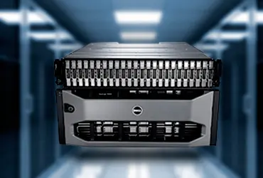

ALMACENAMIENTO Y BACKUP

Nuestro servicio de almacenamiento y backup está diseñado para proteger tu información de manera confiable y eficiente. Ofrecemos soluciones personalizadas que se adaptan a las necesidades de tu negocio, ya sea almacenamiento en la nube, copias de seguridad automáticas o recuperación de datos en caso de pérdidas inesperadas.
Características del servicio:
- Almacenamiento en la nube seguro: Protege tus archivos importantes con acceso rápido y seguro desde cualquier lugar.
- Copias de seguridad automáticas: Configura copias de seguridad regulares para asegurar que tu información siempre esté respaldada.
- Recuperación rápida de datos: En caso de una pérdida de información, recupera tus datos de manera eficiente y minimiza el impacto en tus operaciones.
- Escalabilidad: A medida que tu empresa crece, nuestras soluciones de almacenamiento se adaptan para cubrir tus necesidades sin complicaciones adicionales.
- Soporte especializado: Nuestro equipo de expertos está disponible para ayudarte en la configuración, el mantenimiento y la restauración de tus datos cuando lo necesites.
Con nuestra experiencia en consultoría y servicio técnico, nos aseguramos de que tu empresa tenga un sistema de almacenamiento y backup confiable, seguro y adaptado a tus requerimientos específicos. Protege tu información con una solución confiable que te brinda tranquilidad y eficiencia operativa.